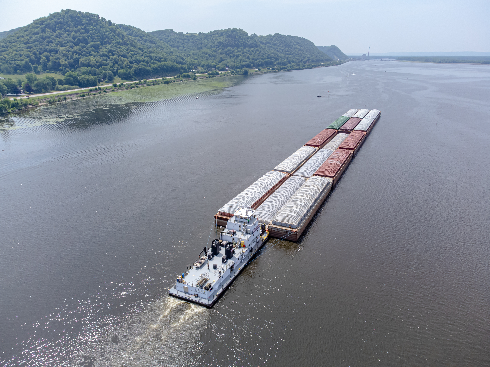
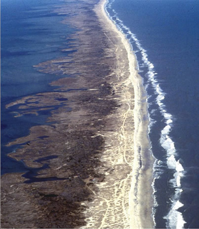
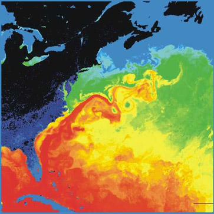
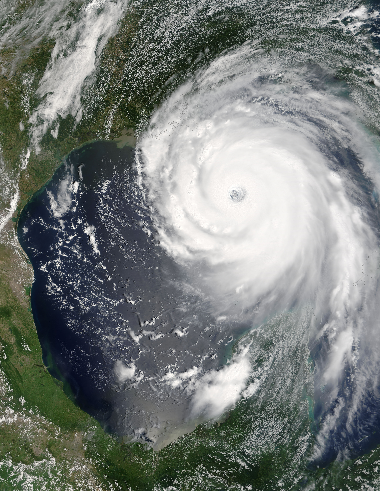

An investigation of riverine flooding, inland waterways, ocean currents, maritime commerce, coastal morphology, and marine hazards across the United States.
1. Flooding Dynamics & Mitigation
Flooding represents the most frequent and economically devastating natural hazard in the United States, occurring across diverse hydrologic regimes throughout the year.
Types and Frequency of Flooding
Riverine Overbank Flooding: Concentrated across the extensive low-gradient alluvial basins of the Mississippi, Ohio, Missouri, and Red River systems. Driven by prolonged regional rainfall and seasonal spring snowmelt, these slow-onset floods inundate thousands of square miles of agricultural bottomland on a regular multi-year basis (e.g., the Great Mississippi Flood of 1927 and the 1993 Midwest Flood).
Flash Floods: High-velocity, localized inundations common in mountainous terrain and the arid American Southwest. Intense convective cloudbursts drop torrential precipitation onto low-permeability desert soils, turning dry arroyos, washes, and narrow slot canyons into destructive debris-laden torrents within minutes.
Coastal Storm Surge & Tidal Flooding: Driven by tropical cyclones and winter nor'easters pushing seawater onto land across the Gulf of Mexico and Atlantic seaboards, exacerbated by high astronomical "king tides" and relative sea-level rise.

Figure 1: Commercial tug pushing a bulk commodity barge tow along the Mississippi River inland waterway corridor.

Figure 2: Aerial view of the Outer Banks, North Carolina, illustrating a dynamic, wave-dominated sandy barrier island system protecting shallow lagoons.
Government Preparedness & Engineering Programs
Federal flood defense is coordinated through structured engineering and risk-management initiatives:
USACE Mississippi River & Tributaries (MR&T) Project: Following the catastrophic 1927 flood, the U.S. Army Corps of Engineers built an integrated system of over 2,200 miles of armored levees, revetments, floodways, and engineered diversion structures (such as the Bonnet Carré Spillway and Morganza Spillway) designed to divert excess floodwaters harmlessly into Lake Pontchartrain and the Atchafalaya basin.
FEMA National Flood Insurance Program (NFIP): Establishes regulatory floodplain management through Flood Insurance Rate Maps (FIRMs), establishing base flood elevations (100-year flood plains) that dictate local zoning codes, foundation elevations, and mandatory flood insurance mandates.
NOAA National Water Model: A high-resolution supercomputer hydrologic modeling framework that simulates streamflow continuously over 2.7 million river reaches, providing automated flood forecasting and early warnings.
2. Land and River Trade Routes
The economic development and industrial dominance of the United States are directly linked to its natural physiographic transportation networks, which leverage flat sedimentary valleys and navigable river basins.
Major Transportation Corridors & Geological Influences
The Mississippi River Navigation System: Comprising over 12,000 miles of commercially navigable inland waterways including the Ohio, Missouri, Illinois, and Arkansas rivers. Flat alluvial gradients allow barge tows to transport bulk agrarian and energy commodities seamlessly from the Midwest heartland to deepwater ocean ports on the Gulf Coast.
The Great Lakes–St. Lawrence Seaway: A joint American-Canadian freshwater marine corridor connecting the industrial Midwest directly to the North Atlantic through glacial lake basins and an engineered system of 15 locks.
Transcontinental Rail & Highway Corridors: Major trunk corridors (I-80, I-10, I-40, and BNSF/Union Pacific railways) exploit structural gaps in mountain ranges, traversing the low-angle Appalachian water gaps, the flat Great Plains, and natural tectonic passes (e.g., South Pass and Donner Pass) across the Rocky Mountains and Sierra Nevada.
Trade Route Trade-Offs
Advantages: Barge shipping is remarkably cost- and fuel-efficient; a single 15-barge tow moves the equivalent cargo volume of roughly 1,050 semi-trucks with a fraction of the carbon emissions.
Disadvantages: Fluvial transport is constrained by geologic and climatic realities. Barges move slowly, northern waterways (Upper Mississippi and Great Lakes) freeze solid during winter, and summer droughts drop river stages, requiring emergency dredging by USACE to prevent commercial groundings.
International Trading Partners
The United States is the world's largest goods trading nation, operating a globally integrated commerce model. According to the U.S. Census Bureau and International Trade Administration (2023), the nation's primary bilateral trade partnerships are summarized below:
Crude oil, motor vehicles, machinery, aerospace, timber
China
$147.8
$427.2
Consumer electronics, machinery, semiconductors, soybeans, medical equipment
Germany
$76.7
$159.7
Pharmaceuticals, precision instruments, motor vehicles, industrial chemicals
Japan
$76.2
$147.3
Aerospace equipment, liquefied natural gas (LNG), automobiles, optics
3. Oceans, Currents & Island Systems
Bordered by the Atlantic Ocean to the east, the Pacific Ocean to the west, the Arctic Ocean to the north, and the Gulf of Mexico to the south, the United States is deeply influenced by marine boundary systems.

Figure 3: Thermal satellite map of the Gulf Stream (warm reds/oranges) flowing northward along the southeastern Atlantic seaboard before deflecting eastward.

Figure 4: Satellite imagery of Hurricane Katrina (August 2005) demonstrating massive cyclonic organization and storm-surge potential over the warm Gulf of Mexico.
Major Ocean Currents & Climatic Effects
The Gulf Stream (Warm Western Boundary Current): Originating in the tropical Gulf of Mexico, this swift, warm current flows up the Eastern seaboard before turning eastward as the North Atlantic Drift. It transfers massive thermal energy into the atmosphere, moderating winter temperatures along coastal New England, fueling Atlantic tropical storms, and keeping northwestern Europe abnormally mild for its latitude.
The California Current (Cold Eastern Boundary Current): Moves cold, subpolar water southward along the West Coast. Wind-driven Ekman transport causes intense coastal upwelling of cold, nutrient-rich deep water. This produces cool, stable marine layer air that moderates coastal temperatures, generates persistent advection fogs (e.g., San Francisco), and suppresses summer precipitation, sustaining the Mediterranean climate of coastal California.
Kuroshio Extension & Aleutian Current: Bring oceanic moisture and moderate temperatures to the Pacific Northwest and southern Alaska, driving heavy coastal orographic rainfall and sustaining temperate coastal rainforests.
Maritime Trade Lanes & Island Geography
The United States is not landlocked; its dual-ocean frontage provides direct, unrestricted commercial access to the primary shipping arteries of the global economy:
Trans-Pacific Container Routes: Connect the major manufacturing hubs of East Asia directly to the mega-ports of Los Angeles, Long Beach, and Seattle/Tacoma.
North Atlantic Sea Lanes: Link the Port of New York and New Jersey, Savannah, and Norfolk to Western Europe.
The Panama Canal: Essential maritime choke-point allowing direct container and bulk vessel transit between U.S. East/Gulf Coast refineries and Pacific markets.
Islands and Territories: The volcanic Hawaiian archipelago serves as a critical strategic defense hub (Indo-Pacific Command) and world-renowned tourism center, while Caribbean territories (Puerto Rico, U.S. Virgin Islands) and Pacific territories (Guam, Northern Mariana Islands, American Samoa) expand maritime exclusive economic zones (EEZs) and commercial fisheries.
4. Coastline Morphology & Landforms
The coastlines of the United States demonstrate a stark tectonic and geomorphic dichotomy between active and passive continental margins.
Atlantic & Gulf Coast: Submergent & Sandy
Located along a passive continental plate margin, the Atlantic and Gulf coasts are classified as submergent, depositional coastlines with irregular, drowned river valleys (estuaries) and a broad, gently sloping continental shelf:
Barrier Island Chains: Features wave- and storm-built elongate sand islands—such as the Outer Banks of North Carolina, Georgia's Sea Islands, and Padre Island, Texas—that parallel the coast, sheltering coastal lagoons, estuaries, and salt marshes from open ocean wave attack.
Estuarine Bays: Rising sea levels following the last glacial retreat drowned ancient river valleys, creating rich, productive estuarine ecosystems such as Chesapeake Bay, Delaware Bay, and Puget Sound.
Pacific Coast: Emergent & Rocky
Positioned along an active convergent and transform margin, the Pacific coast (California, Oregon, Washington) is an emergent, erosional coastline:
Structural Relief: Dominated by steep, wave-battered cliffs, rocky headlands, sea arches, sea stacks, and stepped wave-cut marine terraces produced by recurring tectonic uplift. Sand accumulation is restricted to small, isolated pocket beaches.
Alaskan Fjord Coastlines: In southeast Alaska, Pleistocene valley glaciers carved deep, steep-walled marine troughs, producing complex glaciated fjords and thousands of rocky islands (the Alexander Archipelago).
Coastal Socioeconomic Trade-offs: Protected natural deepwater harbors (New York Harbor, San Francisco Bay, Puget Sound) allow global commerce, while coastal tourism generates hundreds of billions annually. However, barrier island developments face relentless beach erosion, longshore drift sediment loss, wave overwash, saltwater intrusion into coastal aquifers, and long-term sea-level inundation.
5. Marine Hazards: Hurricanes & Tsunamis
Due to its vast maritime boundaries, the United States is exposed to catastrophic cyclonic storms in the Atlantic and basin-wide tsunami waves across the Pacific.
Historical Hurricane Case Studies
The 1900 Galveston Hurricane (Texas): The deadliest natural disaster in United States history. An estimated Category 4 hurricane made landfall with a 15-foot storm surge that completely overwhelmed the low-lying barrier island city, destroying over 3,600 structures and killing an estimated 8,000 to 12,000 people. It prompted the construction of the famous 17-foot Galveston Seawall and a major grade-raising project.
Hurricane Katrina (August 2005): A massive Category 3 hurricane at landfall that struck southeast Louisiana and Mississippi with an unprecedented 28-foot storm surge. Surge waters overwhelmed the USACE flood protection network around New Orleans, causing catastrophic structural breaches in the industrial canal and 17th Street drainage canal floodwalls. Approximately 80% of the city was flooded, resulting in over 1,800 deaths and exceeding $125 billion in economic losses.
Hurricane Ian (September 2022): A high-end Category 4 storm that pushed a 12-to-15-foot storm surge across barrier islands in southwest Florida (Fort Myers Beach and Sanibel Island), demonstrating ongoing barrier island vulnerability.
Historical Tsunami Case Studies
1964 Prince William Sound Earthquake & Tsunami (Alaska): The M9.2 megathrust rupture produced massive underwater landslides that generated regional displacement waves over 100 feet high, completely obliterating coastal towns such as Valdez and Seward. The trans-Pacific tsunami traveled south, killing 11 people in Crescent City, California.
1946 Aleutian Islands Tsunami: Triggered by an M8.6 earthquake off the Aleutian Arc, sending tsunami waves across the Pacific that struck Hilo, Hawaii, without warning, killing 159 people and prompting the creation of the Pacific Tsunami Warning Center (PTWC).
Educational Video: USGS Coastal Change Hazards
The following research overview by the U.S. Geological Survey (USGS) highlights how coastal scientists model extreme storm impacts, dune erosion, and barrier island vulnerability:
Video Source: U.S. Geological Survey — Coastal Change Hazards and Shoreline Vulnerability.
References (APA Format)
Federal Emergency Management Agency. (2023). National Flood Insurance Program: Flood insurance rate maps and flood hazard analysis. U.S. Department of Homeland Security. https://www.fema.gov/flood-insurance
Google. (2024). Gemini (Large language model). https://gemini.google.com/ [AI disclosure: Utilized to outline coastal geomorphology concepts, compile U.S. Census trade metrics, format responsive HTML/CSS markup, and structure APA bibliographies; all facts verified against NOAA and USACE reports].
National Oceanic and Atmospheric Administration. (2023). Ocean currents and climate regulation: The Gulf Stream and California Current systems. National Ocean Service. https://oceanservice.noaa.gov/
National Oceanic and Atmospheric Administration. (2024). The Saffir-Simpson Hurricane Wind Scale and storm surge inundation mechanics. National Hurricane Center. https://www.nhc.noaa.gov/
Tarbuck, E. J., Lutgens, F. K., & Tasa, D. G. (2020). Earth: An introduction to physical geology (13th ed.). Pearson.
U.S. Army Corps of Engineers. (2022). The Mississippi River and Tributaries project: Levees, floodways, and channel stability. New Orleans District. https://www.mvn.usace.army.mil/
U.S. Census Bureau. (2024). Top trading partners: Total U.S. trade in goods with world partners. Foreign Trade Division. https://www.census.gov/foreign-trade/statistics/
U.S. Geological Survey. (2021). Coastal change hazards: Understanding shoreline erosion and extreme storm impacts. Woods Hole Coastal and Marine Science Center. https://www.usgs.gov/cch